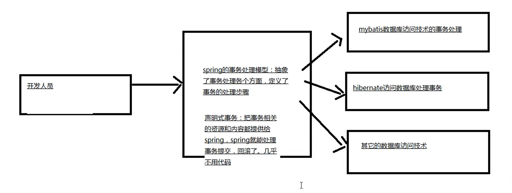

问题：
1、什么是事务？
事务是指一组sql语句的集合，集合中有多条语句， 我们希望这些多条语句，都成功或者都失败，sql语句的执行时一致的，作为一个整体执行。
2、什么时候使用事务？
当操作，涉及到多个表，或者是多个sql语句的insert，updata，delete。需要保证这些语句都成功或者都失败，才能保证操作是符合要求的。
在java程序中，控制事务的语句应该放在哪里？
在services业务类的业务方法上。
3、JDBC处理事务的方式？mybatis处理事务的方式？
jdbc访问数据库，处理事务 Connection conn；conn.commit();conn.rollback();
mybatis,SqlSession.commit();SqlSession.rollback();
4、问题三中事务的处理方式有什么不足？
1>不同的数据库访问技术，处理事务的对象，方法不同。需要了解不同数据库访问技术使用事务的原理。
2>掌握多种数据库中事务的处理逻辑，什么时候提交事务，什么时候回滚事务。
3>处理事务的多种方法。
总结：就是多种数据库的方法技术，有不同的事务处理的机制，对象，方法。
5、怎么解决该不足?
spring提供了一种处理事务的统一模型，使用统一步骤，方式完成多种数据库访问技术的事务处理。

6、处理事务，需要怎么做？做什么？
spring处理事务的模型，使用的步骤都是固定的。把事务使用的信息提供给spring就可以了。
1>事务内部提交，回滚事务，使用的是事务管理器对象，代替开发人员完成commit，rollback。
事务管理器是一个接口和它的众多实现类。
接口： PlatformTransactionManager，定义了事务的重要方法：commit，rollback
实现类：sprin把把每一种数据库访问技术对应的事务处理类都创建好了。
mybatis访问数据库---spring创建好的是DataSourceTransactionManager
hibernate访问数据库---spring创建好的是HibernateTransactionManager
怎么使用：需要告诉spring，项目应用的是哪种数据库的访问技术：
在spring的配置文件中使用<bean>声明 数据库访问技术对于事务管理器的实现类。
例如：使用mybatis访问数据库
<bean id="" class="...DataSourceTransactionManager">
2>说明需要事务的类型
说明方法需要的事务：
1>事务的隔离级别：有四个值

2>事务的超时时间：表示一个方法最长的执行时间，如果方法执行时超过了时间，事务就回滚。单位是：秒，整数值，默认是-1.
3>事务的传播行为：控制业务方法是是不是有事务的，是什么样的事务。
七个传播行为，表示业务方法调用时，事务在方法之间如果是使用的
PROPAGATION_REQUIRED

PROPAGATION_SUPPORTS


PROPAGATION_REQUIRES_NEW


3>提交事务，回滚事务的时机
1>当业务方法执行成功，没有异常抛出， spring在方法执行后提交事务。
2>当业务方法抛出运行时异常或者ERROR，spring执行回滚。
运行时异常的定义：RuntimeException和它的子类都是运行时异常
3>当业务方法抛出非运行时异常，主要是受查异常时，提交事务
受查异常：必须手动处理的异常。
spring框架中提供的事务处理方案
第一种方案：适合小型项目使用的，注解方案。
spring框架自己使用aop实现给业务方法增加事务的功能，使用 @Transactional注解增加事务。
@Transactional注解是spring框架自己的注解，放在public方法的上面，表示当前方法具有事务。可以给注解的属性赋值，表示具体的隔离级别，传播行为，异常信息等等。
@Transactional注解的可选属性：


annotation-driven是tx结尾的


第二种方案：适合大型项目，有很多的类，方法，需要大量的配置事务，使用aspectj框架的功能，在spring配置文件中声明类，方法需要的事务。这种方式业务方法和事务配置完全分离。
实现步骤：（都是在xml配置文件中实现的）


总结：